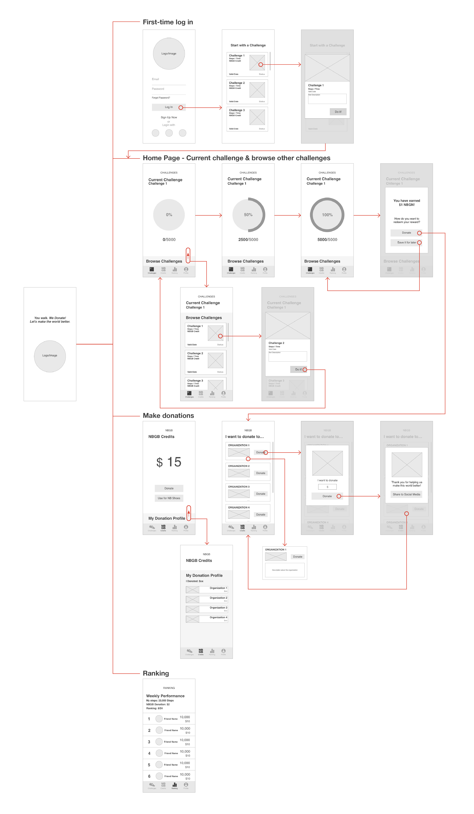

New Balance Gives Back

Overview&Problems
This is a student project, of which the purpose is to promote New Balance by any type of digital media. During the background reserach on New Balance, our team happens to discover the New Balance Gives Back program that is rarely known by New Balance current and potential customers. New Balance Gives Back is a program where New Balance commited to help deserving organizations raise awareness and funds for their causes. Our team sees the branding value of this program and proposed a mobile application idea to further strengthen NB’s public image as an social responsible company and promote New Balance’s propducts within the application as well.

Concept
NB Gives Back is designed to promote New Balance’s public reputation and shoe products
by encouraging people to walk/run more with donation credits as rewards.
Persona
User Journey
Wireframes

Interface Design

Final Product

Start with a challenge when you log in for the first time

Receive rewards and donate after you complete the challenge
View your friends ranking
Design Process


User Test
Design Interations
Reflection